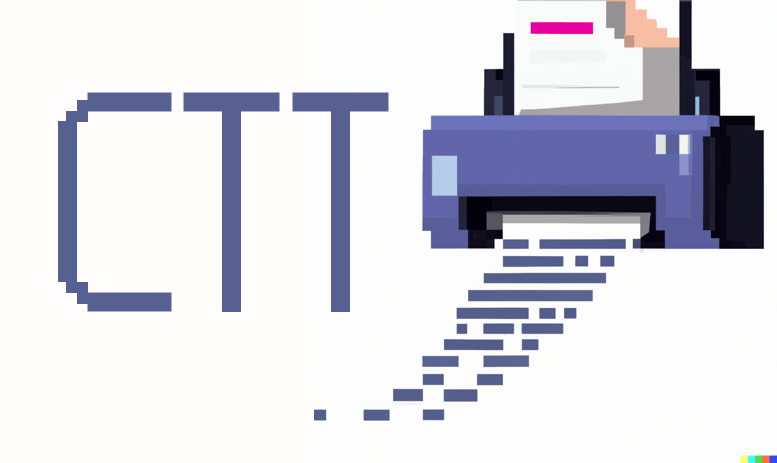

copier-template-tester⚓︎

Parametrize copier templates to test for syntax errors, check the expected output, and to check against copier versions.
Note that ctt only tests the copier copy operation and doesn’t check the update behavior and any version-specific logic that your template may contain because of how quickly those tests become complex.
Usage⚓︎
Configuration File⚓︎
When creating a copier template repository, I recommend following the nested “subdirectory” approach so that the directory looks like this:
└── template_dir
│ └── {{ _copier_conf.answers_file }}.jinja
├── README.md
├── copier.yml
└── ctt.toml
Create a new ctt.toml file in the top-level directory of your copier repository. Populate the file to look like the below example.
# Specify shared data across all 'output' destinations
# Note that the copier.yml defaults are used whenever the key is not set in this file
[defaults]
project_name = "placeholder"
copyright_year = 2022
# Parametrize each output with a relative path and optionally any values to override
[output.".ctt/defaults"]
[output.".ctt/no_all"]
package_name = "testing-no-all"
include_all = false
Pre-Commit Hook⚓︎
First, add this section to your .pre-commit-config.yml file:
repos:
- repo: https://github.com/KyleKing/copier-template-tester
rev: main
hooks:
- id: copier-template-tester
Install and update to the latest revision:
pre-commit autoupdate
The run with pre-commit:
pre-commit run --all-files copier-template-tester
pipx⚓︎
You can also try ctt as a CLI tool by installing with pipx:
pipx install copier-template-tester
cd ~/your/copier/project
ctt
More Examples⚓︎
For more example code, see the tests directory or how this utility is used in a real project: KyleKing/calcipy_template
Project Status⚓︎
See the Open Issues and/or the CODE_TAG_SUMMARY. For release history, see the CHANGELOG.
Contributing⚓︎
We welcome pull requests! For your pull request to be accepted smoothly, we suggest that you first open a GitHub issue to discuss your idea. For resources on getting started with the code base, see the below documentation:
Code of Conduct⚓︎
We follow the Contributor Covenant Code of Conduct.
Open Source Status⚓︎
We try to reasonably meet most aspects of the “OpenSSF scorecard” from Open Source Insights
Responsible Disclosure⚓︎
If you have any security issue to report, please contact the project maintainers privately. You can reach us at dev.act.kyle@gmail.com.
License⚓︎
Created: November 18, 2022